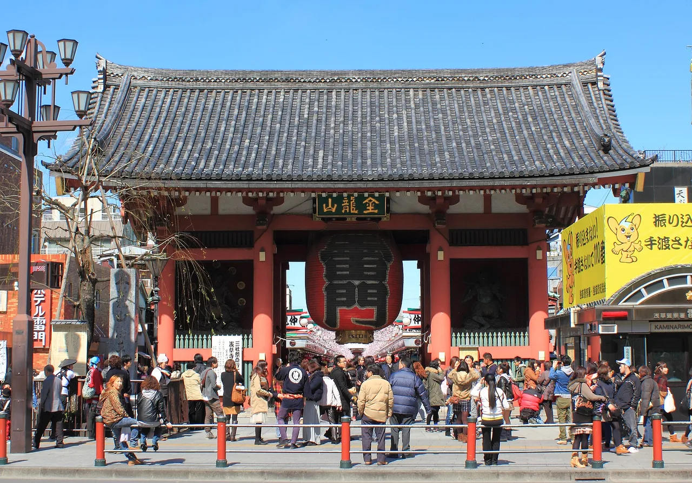

Tokyo Travel Guide for Japanese Learners
Japan's electric capital packs neon nightlife, calm temple gardens, and the world's best public transport into one endless, surprisingly navigable metropolis.

Tokyo can feel overwhelming on paper — 23 wards, dozens of train lines, 14 million people — but it's one of the easiest big cities in the world to explore. Trains are punctual and signposted in English, neighborhoods each have their own character, and you're never far from a convenience store, a clean restroom, or a quiet shrine. This guide covers the essentials for a first visit, plus the Japanese that genuinely helps on the ground.
Getting around
Get a rechargeable IC card (Suica or PASMO) the moment you arrive — tap in and out of trains, buses, and even vending machines. The JR Yamanote loop line connects most areas a first-timer wants (Tokyo Station, Akihabara, Ueno, Shinjuku, Shibuya). For everything else, the Tokyo Metro is dense and cheap. Avoid the 7:30–9:00 rush if you can.
Some links above are affiliate links. We may earn a commission at no extra cost to you. We only list services we'd use ourselves.
What to see
- Shibuya — the famous scramble crossing, youth fashion, and the Hachikō statue.
- Asakusa — old-Tokyo temple town around Sensō-ji and the Nakamise shopping street.
- Shinjuku — skyscrapers, the free observation deck at the Metropolitan Government Building, and Omoide Yokochō's tiny eateries.
- Meiji Jingū & Harajuku — a forest shrine right beside the city's loudest street fashion.
What to eat
Tokyo has more Michelin stars than any city on earth, but the joy is in the everyday: a bowl of ramen at a counter, conveyor-belt sushi, monjayaki in Tsukishima, or a ¥500 set lunch (teishoku). Department-store basements ("depachika") are a hidden food paradise.
Some links above are affiliate links. We may earn a commission at no extra cost to you. We only list services we'd use ourselves.
Common questions
Q. What is the easiest way to get around Tokyo?
A. Tap a rechargeable Suica or PASMO IC card on every train, bus, and vending machine. The JR Yamanote loop links Tokyo Station, Shinjuku, and Shibuya, trains are signposted in English, and it is best to avoid the 7:30 to 9:00 rush.
Q. Is Tokyo good for first-time visitors?
A. Yes. Despite 23 wards and 14 million people, Tokyo is one of the easiest big cities to explore, with punctual English-signed trains and a convenience store, clean restroom, or quiet shrine never far away.
Q. Where can I eat well in Tokyo on a budget?
A. Tokyo holds more Michelin stars than any city on earth, but the everyday wins: a ramen counter, conveyor-belt sushi, monjayaki in Tsukishima, a 500-yen teishoku set lunch, or a department-store depachika food hall.